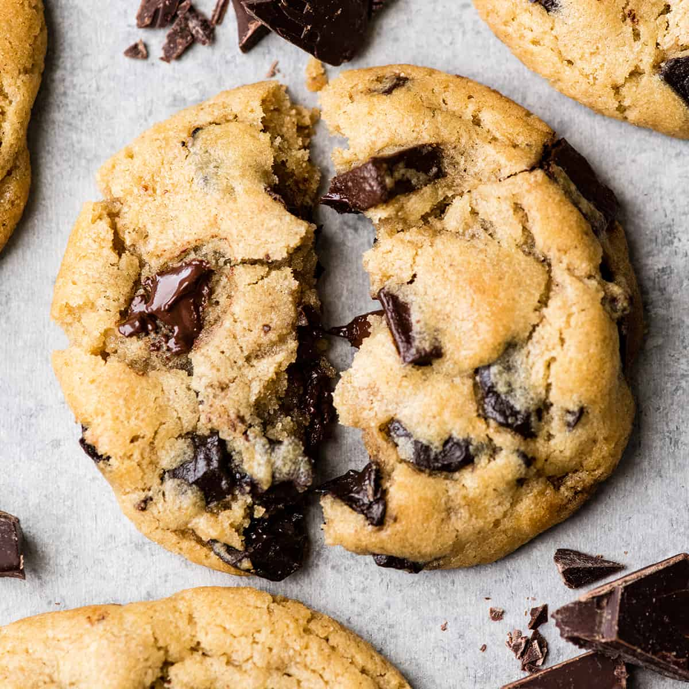

Home
Chocolate Chip Cookies

Delicious chocolate chip cookies
Ingredients
- 1 cup salted butter softend
- 1 cup granulated sugar
- 1 cup light brown sugar packed
- 2 teaspoons pure vanilla extract
- 2 large eggs
- 3 cups all-purpose flour
- 1 teaspoon baking soda
- 1/2 teaspoon baking powder
- 1 teaspoon sea salt
- 2 cups chocolate chips
Steps
- Preheat oven to 375 degrees F. Line three baking sheets with parchment paper and set aside.
- In a medium bowl, mix flour, baking soda, baking powder, and salt. Set aside.
- Cream together butter and sugars until combined.
- Beat in eggs and vanilla until light (about 1 minute)
- Mix in the dry ingredients until combined.
- Add chocolate chips and mix well.
- Roll 2-3 tablespoons of dough at a time into balls and place them evenly spaced on your prepared cookie sheets.
- Bake in preheated over for approximately 8-10 minutes. Take them out when they are just barely starting to turn brown
- Let them sit on the baking pan for 5 minutes before removing to cooling rack.